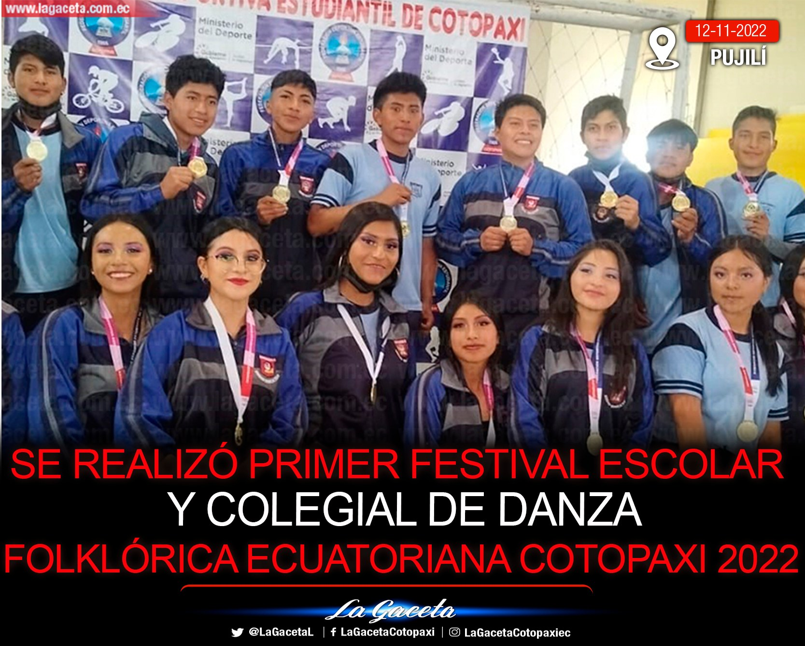
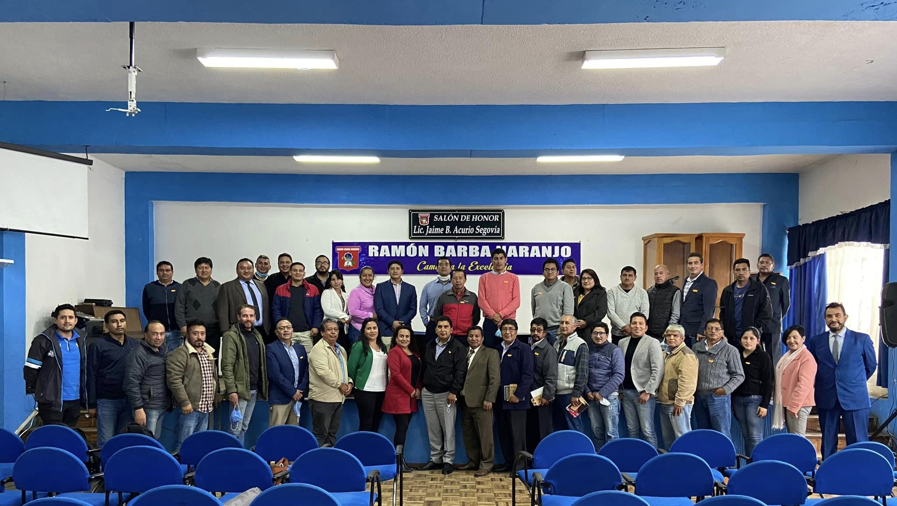
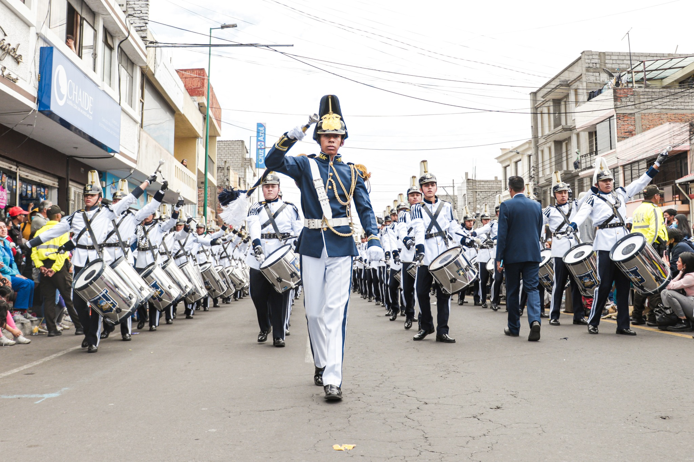
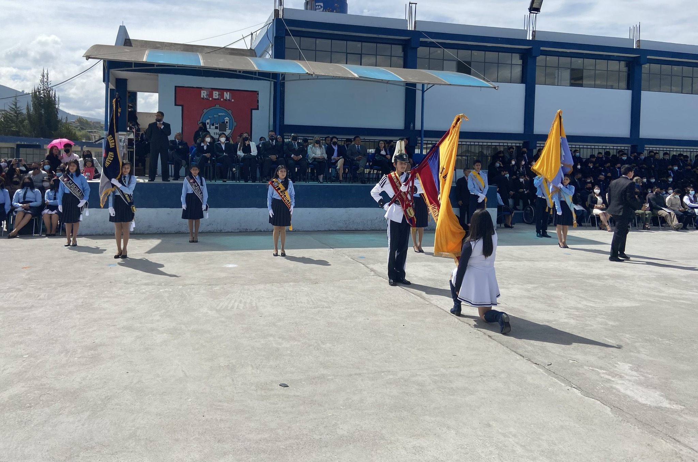

Primer festival colegial de danza folclorica
La Unidad Educativa Ramón Barba Naranjo alcanza el PRIMER LUGAR en su primera participación en el Intercolegial de Danza de Cotopaxi desarrollado en la ciudad de Pujilí, agradecemos y extendemos nuestra felicitación a todos sus integrantes y de manera especial al Sr. Diego Ramos del grupo de Danza Tushuy Cotopaxi e Ing. Jenny Mata docente de la institución, quienes prestaron su valiosa ayuda para la preparación de los mismos. HOY Y SIEMPRE RAMONCINOS

Curso de creacion Innovacion
Recibimos la visita de la Ing. Marcia Molina, Analista Zonal de Educación Especializada, Dr. Nelson López, Director Distrital 05D01 y representantes de unidades educativas técnicas de la Zona 3 , donde se desarrolló la réplica del curso "CREA INNOVACIÓN", además de compartir información importante del Caso Práctico de Innovación Educativa “Implementación de Actividades Prácticas en la Unidad Educativa Ramón Barba Naranjo

Desfile Civico
Desfile cívico 11 de Noviembre, compartimos algunas instancias de nuestra presentación, a gradecemos a Isaac Medina por las fotos, desean mas fotos pueden contactarse con el en el siguiente enlace facebook

Juramento a la Bandera
Rendimos homenaje a nuestra Bandera tricolor, símbolo y orgullo para todos los ecuatorianos. HOY Y SIEMPRE RAMONCINOS